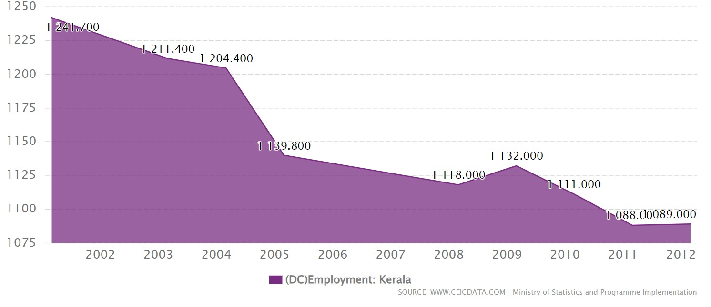

2001 - 2012 | YEARLY | PERSON TH | CENTRAL STATISTICS OFFICE
Employment: Kerala data was reported at 1,089,000 Person th in 2012. This records an increase from the previous number of 1,088,000 Person th for 2011. Employment: Kerala data is updated yearly, averaging 1,132,000 Person th from Mar 2001 to 2012, with 9 observations. The data reached an all-time high of 1,241,700 Person th in 2001 and a record low of 1,088,000 Person th in 2011. Employment: Kerala data remains active status in CEIC and is reported by Ministry of Statistics and Programme Implementation. The data is categorized under India Premium Database’s Labour Market – Table IN.GBA054: Employment: by States (Discontinued).
